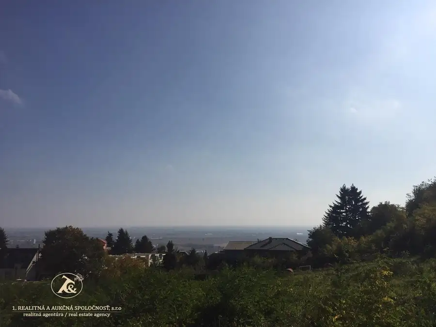
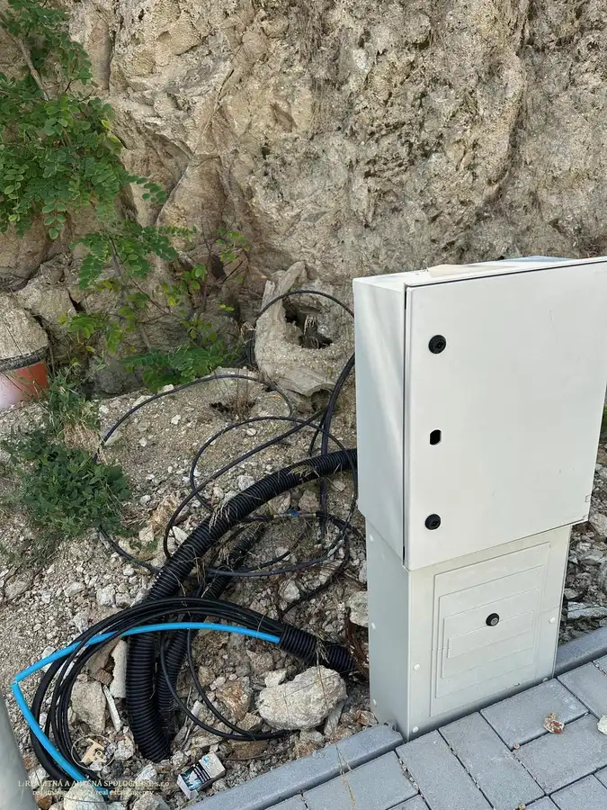
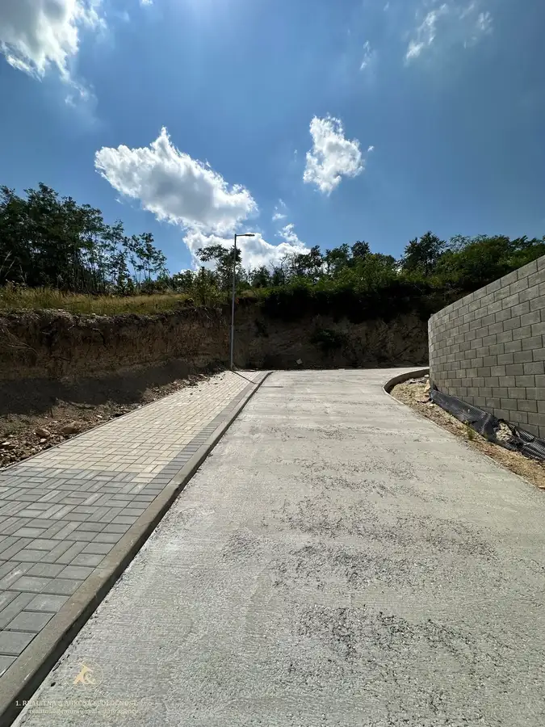
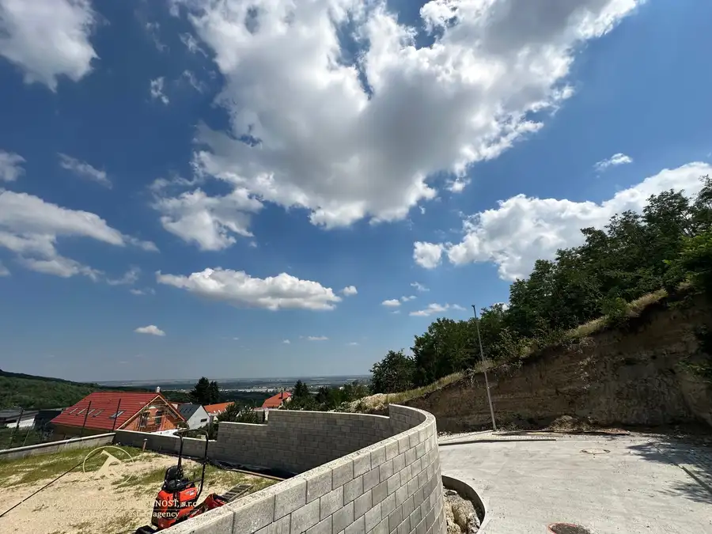
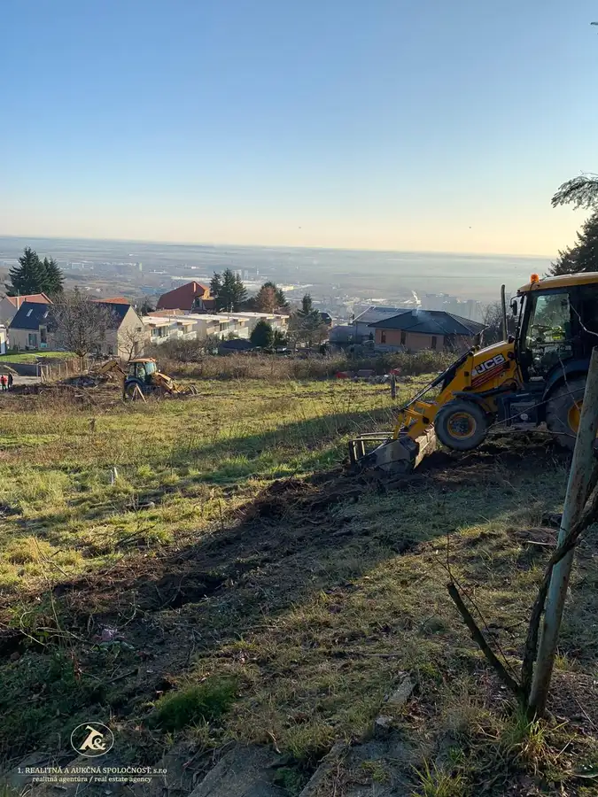
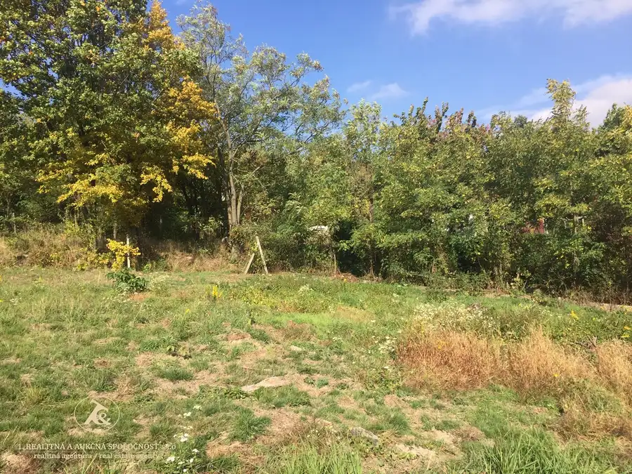

Predaj atraktívneho pozemku o výmere 745 m2 s neobmedzeným výhľadom v Rači - Popolná ul.
Rača, Bratislava







- Plocha745 m²
- VlastníctvoOsobné
O nehnuteľnosti
Ponúkame vám na predaj posledné 2 pozemky, nachádzajúce sa vo vyhľadávanej lokalite Bratislavy – mestskej časti Rača na Popolnej ul. v novovybudovanom areály rodinných domov.Pozemky uspokoja tých najnáročnejších klientov, ktorí majú túžbu bývať v rodinnom dome -pozemky sa nachádzajú pod lesom, majú k dispozícii všetky IS, okrem plynu, a to: kanalizáciu, vodovod, elektrickú energiu (prípojky sú vyvedené pred každým pozemkom), verejné osvetlenie a ničím neobmedzený výhľad na mesto.Pozemky sú mierne svahovité, terénnymi úpravami sa pred pripravujú na komfortné zakladanie stavby.Výmery jednotlivých pozemkov:Pozemok č. 1 – 965 m2, samostatný stavebný pozemok 864 m2 + podiel na komunikácii 101 m2 Pozemok č. 2 – 745 m2, samostatný stavebný pozemok 644 m2 + podiel na komunikácii 101 m2Na pozemku je možné postaviť samostatne stojaci rodinný dom s 2 nadzemnými podlažiami a 1 podzemným.Prístup na pozemok je po novovybudovanej komunikácii.Cena: 399,-/m2Neváhajte nás kontaktovať pre viac informácií alebo dohodnutie obhliadky.Mobil: +421 903 205802Mail: andrea.bielik@realitna.sk
Parametre
- Druh
- Pozemok pre rodinné domy
- Dátum zverejnenia
- 05. 08. 2025
- Elektrina
- Na pozemku - 400 V
- Odpadové vody
- Na pozemku - Kanalizácia
- Plocha pozemku
- 745 m²
- Terén pozemku
- Mierne svahovitý
- Typ
- Predaj
- Vlastníctvo
- Osobné
- Voda
- Na pozemku
- Územie
- Intravilán
- Šírka pozemku
- 21
Kde to je


Mohlo by Vás zaujímať
 BytNové
670 000 €Dom, ktorý si nekupujete pre to, aký je dnes. Kupujete si ho pre to, kde je – Patrónka, ul. Západný rad, Bratislava - Staré Mesto
Staré Mesto, Bratislava
175 m²
BytNové
670 000 €Dom, ktorý si nekupujete pre to, aký je dnes. Kupujete si ho pre to, kde je – Patrónka, ul. Západný rad, Bratislava - Staré Mesto
Staré Mesto, Bratislava
175 m²
 Komerčné priestoryNové
1 500 000 €KÚPTE HOTOVÝ BIZNIS, NIE PROJEKT NA PAPIERI Penzión Tematín pri Piešťanoch – etablovaná značka, fungujúca prevádzka a priestor na ďalší rast
Moravany nad Váhom
1260 m²
Komerčné priestoryNové
1 500 000 €KÚPTE HOTOVÝ BIZNIS, NIE PROJEKT NA PAPIERI Penzión Tematín pri Piešťanoch – etablovaná značka, fungujúca prevádzka a priestor na ďalší rast
Moravany nad Váhom
1260 m²
 Chalupa, rekreačný domčekNové
Cena na vyžádáníDlhodobý celoročný prenájom chaty – Šaštín Stráže | 5 min, od jazera
Šaštín-Stráže
90 m²
Chalupa, rekreačný domčekNové
Cena na vyžádáníDlhodobý celoročný prenájom chaty – Šaštín Stráže | 5 min, od jazera
Šaštín-Stráže
90 m²